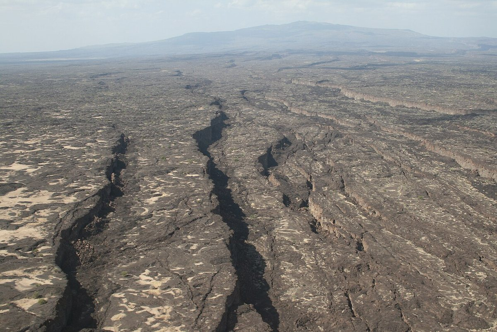

Braun et al. · Oldowan at Bokol Dora 1 (PNAS, 2019) ↗
Figure maps locate Bokol Dora 1 and show the archaeological horizon within the dated sequence.
Deep dives / Africa & Middle East
The excavated Bokol Dora 1 stone assemblage preserves early controlled flaking in the Afar. A much older jaw from another locality in the Ledi-Geraru research area provides an independent fossil benchmark for the emergence of Homo.
The map shows the Bokol Dora area of Ledi-Geraru in the lower Awash Valley.

Approximate public research locality on a modern terrain map.
About 2.61–2.58 Ma
Buried Oldowan artifact assemblage in the Ledi-Geraru research area. [1]
11.35°, 40.86°The assemblage includes cores and sharp flakes concentrated in a single buried horizon. Scar patterns record how pieces were removed, and the researchers used quantitative comparisons with Lomekwi and other Oldowan sites to evaluate the way the stone was worked. [1]
The artifact horizon falls above a dated volcanic tuff and below a change in recorded magnetic polarity. These constraints give an interval of about 2.61–2.58 million years. The bracket overlaps the oldest evidence at nearby Gona at the scale of geological uncertainty. [1] [2]
The partial mandible LD 350-1 was found in the Ledi-Geraru area at a different locality and dates to about 2.80–2.75 million years ago. Its features support an early Homo assignment at genus level. The mandibular fossil and the younger tool horizon answer different questions about the same landscape. [3] [1]
Later research found teeth representing both Homo and Australopithecus within the Ledi-Geraru sequence. An unnamed australopith from about 2.63 million years ago adds a further possible contemporary for the earliest Oldowan toolmakers of the Afar. [4]
Placing Bokol Dora 1, Ledi-Geraru in human-family chronology depends on bracketing stratified volcanic ash layers (40Ar/39Ar), cosmogenic nuclide burial ages, or paleomagnetic reversals above and below the artifact or footprint horizon rather than dating stone flakes in isolation. Reworking, fluvial transport, and cut-mark/percussion equifinality remain key variables evaluated in every new study. [1] [2]
Rather than identifying a single exclusive ancestor, this locality serves as a tightly constrained chronological anchor that must be compared side-by-side with contemporary Rift, southern, north African, and Eurasian finds inside the playable Human Family map. [1]
| Anchor Locality | Published Age Horizon | Primary Evidence Signature | Key Research Limitation | Sources |
|---|---|---|---|---|
| Bokol Dora 1, Ledi-Geraru | About 2.61–2.58 Ma | Buried Oldowan artifact assemblage in the Ledi-Geraru research area. | The map shows the Bokol Dora area of Ledi-Geraru in the lower Awash Valley. | [1] |
Open the source maps for their original detail, legends and dates. Their coverage and reproduction terms belong to the issuing institution.
Figure maps locate Bokol Dora 1 and show the archaeological horizon within the dated sequence.
Open this era on global Explore ↗ Open Africa & Middle East atlas ↗ Climate, sea level & ice-sheet context ↗
Sources checked and linked above; geological and historical dating methods follow the primary papers.